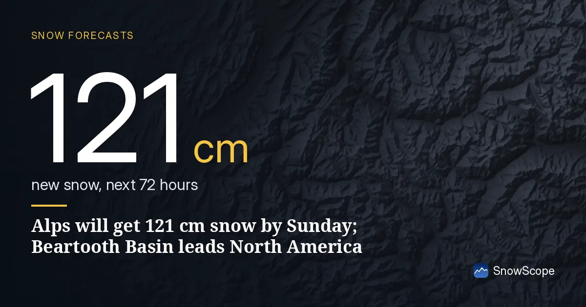
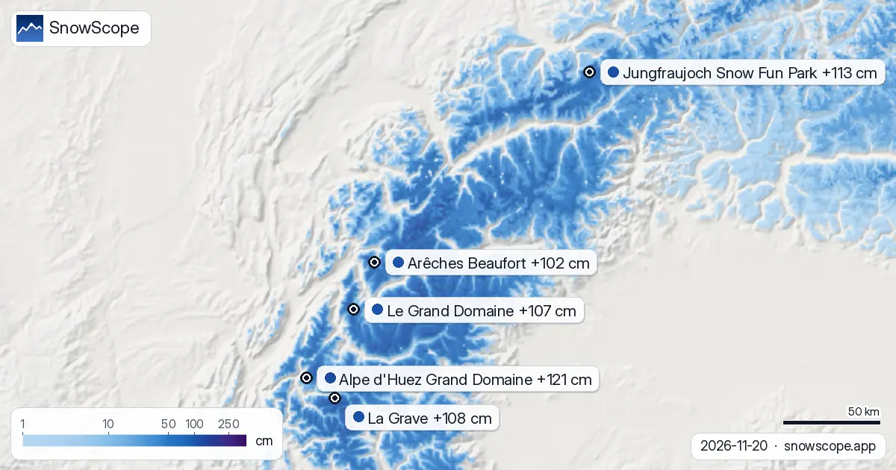

Alps will get 121 cm snow by Sunday; Beartooth Basin leads North America
A large snow system will move across the Alps this weekend, delivering the most water storage at Alpe d'Huez Grand Domaine with 121 cm forecast by Sunday. In North America, Beartooth Basin Summer will see the heaviest snow with 31 cm over the same period.
See the live snow forecast for Alpe d'Huez Grand Domaine in the SnowScope appSnow depth, powder alerts and the 3D map, free.
Alps: major snow event from Friday to Sunday
The Alpine region is heading into a significant snow event. Our model shows Alpe d'Huez will accumulate the most: 121 cm by Sunday. This snow will fall across a wide elevation range because the snow line sits at 2300 m, so lower terrain will also capture precipitation.
Jungfraujoch Snow Fun Park ranks second in the Alps with 113 cm forecast, though today and tomorrow will see only 23 cm there; most of the fall comes later in the period. La Grave, at 3543 m, will receive 108 cm but faces a slightly higher snow line at 2900 m, leaving terrain below that height with rain or wet snow.
Four French resorts round out the top five: Le Grand Domaine (107 cm), Arêches Beaufort (102 cm), Les 7 Laux (94 cm), and Orelle (92 cm). Snow lines across these sites range from 2200 to 2500 m, so mid-mountain runs will see good accumulation while very low slopes may see mixed precipitation.
| # | Resort | Region | +24 h | +72 h | Snow line |
|---|---|---|---|---|---|
| 1 | Alpe d'Huez Grand Domaine | Alps · France | 5 cm | 121 cm | 2,300 m |
| 2 | Jungfraujoch Snow Fun Park | Alps · Switzerland | 23 cm | 113 cm | 3,100 m |
| 3 | La Grave | Alps · France | 5 cm | 108 cm | 2,900 m |
| 4 | Le Grand Domaine | Alps · France | 7 cm | 107 cm | 2,500 m |
| 5 | Arêches Beaufort | Alps · France | 7 cm | 102 cm | 2,500 m |
| 6 | Engelberg Titlis | Alps · Switzerland | 22 cm | 96 cm | 2,200 m |
| 7 | Les 7 Laux | Alps · France | 5 cm | 94 cm | 2,400 m |
| 8 | Orelle | Alps · France | 7 cm | 92 cm | 2,500 m |
| # | Resort | Region | +24 h | +72 h | Snow line |
|---|---|---|---|---|---|
| 1 | Beartooth Basin Summer | US West · United States | 10 in (26 cm) | 12 in (31 cm) | 4,900 ft (1,500 m) |
| 2 | Grand Targhee Resort | US West · United States | 7 in (19 cm) | 10 in (25 cm) | 4,900 ft (1,500 m) |
| 3 | Jackson Hole | US West · United States | 7 in (18 cm) | 10 in (25 cm) | 5,200 ft (1,600 m) |
| 4 | Red Lodge Mountain | US West · United States | 7 in (18 cm) | 9 in (22 cm) | 4,300 ft (1,300 m) |
| 5 | Big Sky Resort | US West · United States | 7 in (17 cm) | 8 in (20 cm) | 5,200 ft (1,600 m) |
| 6 | Telluride | US West · United States | 6 in (16 cm) | 8 in (20 cm) | 8,900 ft (2,700 m) |
| 7 | Hurricane Ridge | US West · United States | 0 in (1 cm) | 8 in (20 cm) | 3,900 ft (1,200 m) |
| 8 | Antelope Butte | US West · United States | 6 in (16 cm) | 7 in (19 cm) | – |
| # | Resort | Region | +24 h | +72 h | Snow line |
|---|---|---|---|---|---|
| 1 | Mount Washington Alpine Resort | Western Canada · Canada | 0 cm | 29 cm | 600 m |
| 2 | Cypress Mountain | Western Canada · Canada | 0 cm | 15 cm | 800 m |
| 3 | Grouse Mountain | Western Canada · Canada | 0 cm | 15 cm | 800 m |
| 4 | Mt Seymour | Western Canada · Canada | 0 cm | 11 cm | – |
| 5 | Whistler Blackcomb | Western Canada · Canada | 0 cm | 11 cm | 1,000 m |
| 6 | Mount Cain Alpine Park | Western Canada · Canada | 0 cm | 10 cm | 600 m |
| 7 | Ski Callaghan | Western Canada · Canada | 0 cm | 8 cm | – |
| 8 | Apex | Western Canada · Canada | 0 cm | 7 cm | 900 m |

US West: Beartooth Basin Summer leads with 31 cm
In the US West, Beartooth Basin Summer stands out with 26 cm arriving in the next 24 hours and 31 cm total by Sunday. The snow line sits at 1500 m, keeping precipitation dry across most of the terrain. Grand Targhee Resort and Jackson Hole both trail with 25 cm through Sunday.
Red Lodge Mountain, Big Sky Resort, and Telluride follow with 20 to 22 cm each. All these mountains sit well above their respective snow lines, so the new snow should be dry and skiable. Only Hurricane Ridge shows weak accumulation at 20 cm, reflecting weaker lift in that region.

Western Canada: Mount Washington leads but no snow today
Western Canada will see snow starting tomorrow, with no fresh snow forecast today across any resort. Mount Washington Alpine Resort leads with 29 cm by Sunday, followed by Cypress Mountain and Grouse Mountain at 15 cm each. Snow lines range from 600 to 1000 m, so the high alpine terrain will capture dry snow while lower slopes may see rain or wet snow.
Whistler Blackcomb and Apex both show modest accumulation around 10 cm, reflecting their lower elevations and less exposure to the system. The timing here is key: all the action arrives Saturday and Sunday, so Friday will see no measurable snow at the top.
Water storage and timing
These forecasts measure the water contained in new snow across the upper mountain zones. The Alps will store significantly more water than North America, with Alpe d'Huez holding the equivalent of 121 cm of fresh snow. Snow lines matter: when precipitation falls above the snow line, it stays frozen; below it, rain dominates and water runs off quickly rather than storing on the mountain.
The timing is split between regions: the Alps start accumulating today and continue through Sunday. North America's main event is Saturday and Sunday. Plan your approach to terrain based on these windows and the snow line heights shown in the maps.
Tips for skiers
- Alpe d'Huez and Jungfraujoch will offer the best skiing by Sunday in the Alps. Head above 2300 m at Alpe d'Huez to stay on dry snow; lower runs may hold wet snow or rain.
- In the US West, Beartooth Basin Summer will have the best conditions Friday and Saturday. All the northern Rockies resorts stay above their snow lines, so powder will be dry.
- Western Canada's snow does not arrive until Saturday. If you are there Friday, check the official avalanche bulletin for any existing stability concerns before heading off-piste after the new snow arrives.
- Watch the snow line height at your chosen resort: terrain below the line may see rain instead of snow, reducing water storage and creating stability issues where old snow meets new rain.
- These are estimates for upper slopes. Actual snow depth at any one location depends on wind transport and local topography. Use SnowScope's map to check depth at your planned terrain.
About these numbers
Resort snow depths are the deepest snow on the resort's upper slopes from the SnowScope snow model (about 1 km, run of 20 November); they are estimates for an area, not a measurement at one point. Station values are measurements on the date shown. Forecasts can change. Always read the official avalanche bulletin before going off-piste.
Official avalanche bulletins: EAWS (Europe) · avalanche.org (US) · Avalanche Canada
Cite this report
For research, teaching or the press: the numbers and charts are free to reuse under CC BY 4.0 with this citation.
SnowScope (2026), Alps will get 121 cm snow by Sunday; Beartooth Basin leads North America, https://snowscope.app/blog/en/2026/11/where-most-snow-falls-next-72-hours-20-november-2026.html, accessed 2026-11-20
SnowScope (Atlas Labs). (2026, November 20). Alps will get 121 cm snow by Sunday; Beartooth Basin leads North America. SnowScope snow reports. https://snowscope.app/blog/en/2026/11/where-most-snow-falls-next-72-hours-20-november-2026.html
BibTeX
@misc{snowscope2026wheremostsnowfallsnext72,
author = {{SnowScope (Atlas Labs)}},
title = {Alps will get 121 cm snow by Sunday; Beartooth Basin leads North America},
year = {2026},
month = nov,
howpublished = {\url{https://snowscope.app/blog/en/2026/11/where-most-snow-falls-next-72-hours-20-november-2026.html}},
note = {Published 2026-11-21 10:18 UTC; accessed 2026-11-20}
}· CC BY 4.0 · Methods, data and tools →
Alpe d'Huez Grand Domaine: snow and temperature by height, this winter vs last (tools) →
Follow Alpe d'Huez Grand Domaine
Free: a message when fresh snow is coming, and the forecast every morning.
More snow reports

Whistler Blackcomb sits at 27 cm on 5 November, only 41 per cent of normal for this date. A major system brings 22 cm snow in the next 24 hours.

A slope map of Les Grands Montets and seven other ski areas shows how much of the ground is steeper than 30°, 35° and 40°, and why that line matters for avalanches.

Himalaya snow cover in November 2026 from NASA MODIS: snow on 610,409 km² of ground above 2,000 m between the Hindu Kush and Bhutan, half the clear ground white from about 4,800 m in Nepal and 3,600 m in the Karakoram. The NDSI explained, plus shadows, cloud and the low autumn sun.